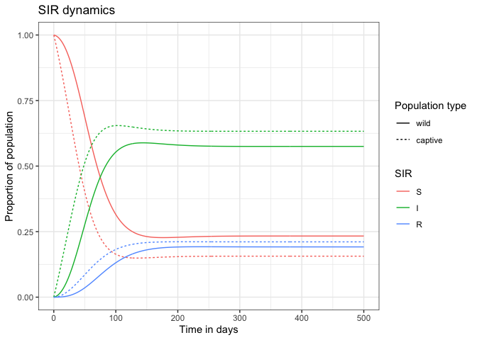

The goal of whitetailedSIRS is to provide a simple package to generate epidemic projections in white tailed deer populations using a Susceptible-Infected-Recovered-Susceptible (SIRS) modeling framework. The outputs of this package are ggplot friendly, and for the most part, we use a list-column workflow when working with multiple simulations. Details on the model can be found in the vignettes.
Installation
You can install the development version of whitetailedSIRS from GitHub with:
# install.packages("devtools")
devtools::install_github("disease-decision-analysis-and-research/whitetailedSIRS")Example
This is a basic example to run a simple projection using the base function:
library(whitetailedSIRS)
## basic example code
example_inits <- c(S_wild = 1,
I_wild = 0,
R_wild = 0,
S_captive = 1,
I_captive = 0,
R_captive = 0)
# length of time to run this for
example_times <- seq(0, 500, by = 1)
# The parameters we are using in the simulation
example_params <- c(alpha_immunity = 0.03,
beta_aero_ww = 0.01,
beta_aero_cw = 0.01,
beta_aero_cc = 0.02,
beta_aero_hw = 0.01,
beta_aero_hc = 0.2,
beta_dc_ww = 0.01,
beta_dc_cw = 0.01,
beta_dc_cc = 0.01,
phi_cw = 0,
phi_wc = 0,
gamma_recov = 0.01,
I_human = 0.05)
library(deSolve)
library(rootSolve)
example_out <- ode(y = example_inits, times = example_times, parms = example_params, func = whitetailedSIRS::simple_sirs)
example_eq <- runsteady(y = example_inits, parms = example_params, func = whitetailedSIRS::simple_sirs)
library(tidyverse)
example_out %>%
as_tibble() %>%
pivot_longer(-time, names_to = "compartment", values_to = "proportion") %>%
separate(compartment, sep = "_", c("sir_type", "pop_type")) %>%
mutate(sir_type = factor(sir_type, levels = c("S", "I", "R")),
pop_type = factor(pop_type, levels = c("wild", "captive"))) %>%
ggplot(aes(x = time, y = proportion, color = sir_type, linetype = pop_type)) +
geom_line() +
labs(title = "SIR dynamics", y = "Proportion of population", x = "Time in days",
color = "SIR", linetype = "Population type") +
theme_bw()
example_eq$y %>%
as_tibble_row() %>%
pivot_longer(cols = everything(), names_to = "compartment", values_to = "proportion") %>%
separate(compartment, sep = "_", c("sir_type", "pop_type")) %>%
mutate(sir_type = factor(sir_type, levels = c("S", "I", "R")),
pop_type = factor(pop_type, levels = c("wild", "captive"))) %>%
ggplot(aes(x = sir_type,
alpha = pop_type,
y = proportion, fill = sir_type)) +
geom_col(position = "dodge") +
labs(title = "Equilibrium proportions", x = "Compartment", alpha = "Population type", fill = "SIR") +
scale_alpha_discrete(range = c(1, 0.4)) +
ylim(0, 1) +
theme_bw()